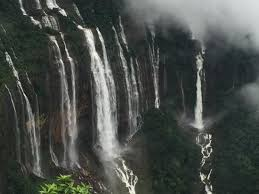

Nohkalikaifalls

Nohkalikai Falls is the tallest plunge waterfall in India. Its height is 1115 feet (340 metres), making it as the highest waterfall in India. The waterfall is located near Cherrapunji, one of the wettest places on Earth. Nohkalikai Falls are fed by the rainwater collected on the summit of comparatively small plateau and decrease in power during the dry season in December - February. Below the falls there has formed a plunge pool with unusual green colored water.

HOW TO REACH ?
Nearest Airport: Cherrapunji
Nearest Railway Station:Cherrapunji
Nearest Bus Stand:Cherrapunji